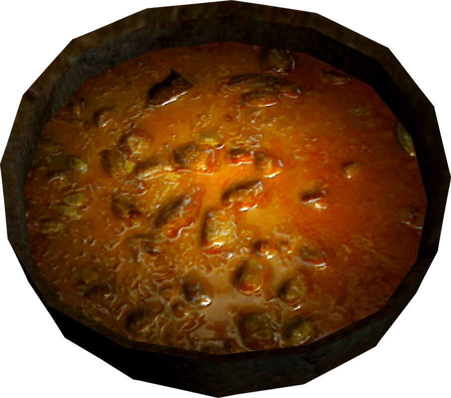

Cabbage Potato Soup

Description
Cabbage Potato Soup is a food item in
The Elder Scrolls V: Skyrim.
Ingredients
Salt pile
Potato
Leek
Cabbage
Steps
Cabbage potato soup can be cooked at a cooking place
Restore 10 Health
Restore 10 Stamina